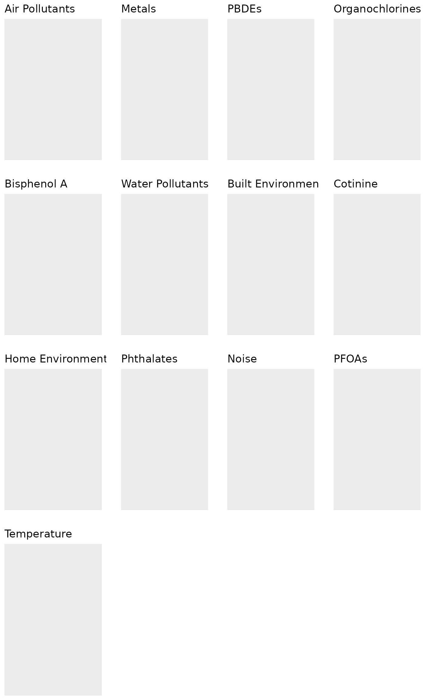

Non-disclosive federated exposome data analysis with DataSHIELD and Bioconductor
Xavier Escribà Montagut
Bioinformatics Research Group in Epidemiolgy (BRGE), Barcelona Insitute for Global Health (ISGlobal)xavier.escriba@isglobal.org
Juan R. Gonzalez
Bioinformatics Research Group in Epidemiolgy (BRGE), Barcelona Insitute for Global Health (ISGlobal)juanr.gonzalez@isglobal.org
2022-03-04
dsExposome.RmdIntroduction
Sharing data across studies that are subject to confidentiality and must comply with data protection regulations is a challenging task. DataSHIELD is a software solution for secure biomedicine collaboration that allows privacy-protected data analysis of federated databases. It enables the remote and non-disclosive analysis of sensitive research data, and has been developed under several EC projects (BioSHaRE-EU, InterConnect, LifeCycle, EUCAN-Connect). So far, DataSHIELD includes an extensive set of disclosure-protected functions for data manipulation, exploratory data analytics, generalised linear modelling and data visualizations. Here, we have extend DataSHIELD tools by incorporating new functionalities to deal with exposome data visualization and association analysis. We also illustrate how to integrate omics information with exposome data.
Opal is OBiBa’s core database application for epidemiological studies. Participant data, collected by questionnaires, medical instruments, sensors, administrative databases etc. can be integrated and stored in a central data repository under a uniform model. Opal is a web application that can import, process, copy data and has advanced features for cataloging the data (fully described, annotatted and searchable data dictionaries). Opal is typically used in a research center to analyze the data acquired at assessment centres. Its ultimate purpose is to achieve seamless data-sharing among epidemiological studies. Opal is the reference implementation of the DataSHIELD infrastructure.
Developing and implementing new algorithms to perform advanced data analyses under DataSHIELD framework is a current active line of research. However, the analysis of big data within DataSHIELD has some limitations. Some of them are related to how data is managed in the Opal’s database and others are related to how to perform statistical analyses of big data within the R environment. Opal databases are for general purpose and do not properly manage large amounts of information and, second, it requires moving data from original repositories into Opal which is inefficient (this is a time, CPU and memory consuming operation) and is difficult to maintain when data are updated. We have recently overcome the problem related to DataSHIELD big data management by developing a new data infrastructure within Opal: the resources. In this bookdown the reader can learn a bit more about Opal, DataSHIELD and other releated issues.
This new infrastructure allow us, among others, the analysis of exposome data since we can define a resource as an ExposomeSet an specific method to encapsulate exposome data) in R.
For those who are not familiar with Opal servers and do not know how to create this infrastructure, we recommend to read this section from our bookdown.
Exposome data in a demo Opal server
We have created an Opal demo server that contains different projects, including one called EXPOSOME, as we can see in the next figure

Opal projects in our Opal demo server
The Opal server can be accessed with the credentials:
- username:
administrator - password:
password
The EXPOSOME project contains 4 resources. One ExposomeSet object and three other .csv files containing required data for exposome studies: exposome data, exposome annotation and phenotype information.

Resources available in the EXPOSOME Opal project
Therefore, we will assume that the user will have either an ExposomeSet object or different text/Excel files having exposome data. The ds.Exposome package should also be installed into the Opal server (see here to know how to do it).
Next, we illustrate how to perform the main analyses using ds.ExposomeClient packages that should be installed in the R client side by using
devtools::install_github("isglobal-brge/dsExposomeClient")Creating the required ExposomeSet object
An ExposomeSet object is made up from three different tables. Having an ExposomeSet extremely facilitates exposome data analysis within dsExposomeClient. Two minimum pieces of information (e.g. objects) are required:
- exposures: data frame/tibble having the individual ID and the exposure variables;
- phenotypes: data frame/tibble having the individual ID, outcomes and the covariates.
It is also possible to incorporate annotated information on exposures in a separate object (although it is not mandatory):
- description: data frame/tibble having the exposure names and metadata such as families of exposure
The objects need to be coerced into a R object of class ExposomeSet that can be done using ds.loadExposome() function as follows.
We first start by loading the required packages
Then, we load both exposome and phenotype data into the study servers. On this example, the tables are on the demo Opal server as resources (see @ref(fig:resourcesExpo)), which means they have to be loaded on the study server and be coerced as data frames as described here.
Of course, the user may also have exposome and phenotypes information in Opal tables that can also be loaded into the servers using standard DataSHIELD functions.
builder <- newDSLoginBuilder()
builder$append(server = "server1", url = "https://opal-demo.obiba.org/",
user = "dsuser", password = "P@ssw0rd",
driver = "OpalDriver", profile = "exposome")
logindata <- builder$build()
conns <- datashield.login(logins = logindata)
datashield.assign.resource(conns, symbol = 'exposures', resource = list(server1 = 'EXPOSOME.exposures'))
datashield.assign.expr(conns, symbol = "exposures", expr = quote(as.resource.data.frame(exposures)))
datashield.assign.resource(conns, symbol = 'phenotypes', resource = list(server1 = 'EXPOSOME.phenotypes'))
datashield.assign.expr(conns, symbol = "phenotypes", expr = quote(as.resource.data.frame(phenotypes)))
ds.ls()$server1
$server1$environment.searched
[1] "R_GlobalEnv"
$server1$objects.found
[1] "exposures" "phenotypes"As it can be seen, there are two objects in the opal server (exposures and phenotypes) that are the required ones for dsExposomeClient package. Note that both have a common variable ( idnum in our case) that will be used to link the two objects when creating the ExposomeSet
ds.colnames("exposures")$server1
[1] "idnum" "PFHxS" "PFOA" "PFOS" "PFNA"
[6] "DDE" "DDT" "HCB" "bHCH" "PCB118"
[11] "PCB153" "PCB180" "PCB138" "BDE17" "BDE28"
[16] "BDE71" "BDE47" "BDE66" "BDE100" "BDE99"
[21] "BDE85" "BDE154" "BDE153" "BDE138" "BDE183"
[26] "BDE190" "BDE209" "Hg" "Co" "Ni"
[31] "As" "Cu" "Zn" "Se" "Mo"
[36] "Cd" "Sb" "Cs" "Tl" "Pb"
[41] "MEHP" "MEHHP" "X5cxMEPP" "X2cxMMHP" "MEP"
[46] "MiBP" "MnBP" "X7OHMMeOP" "MBzP" "MEOHP"
[51] "BPA" "THM" "CHCl3" "BTHM" "Cotinine"
[56] "Gas" "ETS" "H_pesticides" "G_pesticides" "Benzene"
[61] "PM25CU" "PM25FE" "PM25K" "PM25Ni" "PM25S"
[66] "PM25Sl" "PM25V" "PM25Zn" "PM10Cu" "PM10Fe"
[71] "PM10K" "PM10Ni" "PM10S" "PM10SI" "PM10V"
[76] "PM10Zn" "NO2" "NO" "NOx" "PM25"
[81] "PM10" "PMcoarse" "AbsPM25" "Dens" "Conn"
[86] "Green" "Noise_d" "Noise_n" "Temp"
ds.colnames("phenotypes")$server1
[1] "idnum" "whistling_chest" "flu" "rhinitis"
[5] "wheezing" "birthdate" "sex" "age"
[9] "cbmi" "blood_pre" Now, we are ready to create the ExposomeSet object. To this end, the ds.loadExposome () function should be used. It takes as input parameters the names of the objects on the study server among some further configuration options. Please, refer to the function documentation for more information.
ds.loadExposome(exposures = "exposures",
phenotypes = "phenotypes",
exposures.idcol = "idnum",
phenotypes.idcol = "idnum",
object_name = "exposome_object")
ds.class("exposome_object")$server1
[1] "ExposomeSet"
attr(,"package")
[1] "rexposome"The function also allows to incorporate metadata on the exposures that can be used to improve results visualization. This requires to have another object (in our case called description) that can be loaded into the Opal server as
datashield.assign.resource(conns, symbol = 'description', resource = list(server1 = 'EXPOSOME.description'))
ds.class('description')$server1
[1] "TidyFileResourceClient" "FileResourceClient" "ResourceClient"
[4] "R6"
datashield.assign.expr(conns, symbol = "description", expr = quote(as.resource.data.frame(description)))
ds.class('description')$server1
[1] "spec_tbl_df" "tbl_df" "tbl" "data.frame" In our case this is the metadata we have
ds.colnames("description")$server1
[1] "Family" "Exposure" "Name" Then, the ExposomeSet is created by adding further information to dsloadExposome () function
ds.loadExposome(exposures = "exposures",
phenotypes = "phenotypes",
exposures.idcol = "idnum",
phenotypes.idcol = "idnum",
description = "description",
description.expCol = "Exposure",
description.famCol = "Family",
object_name = "exposome_object")
ds.class("exposome_object")$server1
[1] "ExposomeSet"
attr(,"package")
[1] "rexposome"NOTE: In this vignette we are using this object that contains information on family exposures. All the following functions will also work if description is not provided since when description = NULL the ExposomeSet object will have the family name as the exposure one:
Exposure Family
PFOA PFOA
pm2.5 pm2.5
pm10 pm10
smoke smoke
... ....Loading the required ExposomeSet object from a resource.
The user can also prepare an ExposomeSet outside DataSHILED and provide this information in the Opal server as a resource. Our Opal demo (EXPOSOME project) has an ExposomeSet resource (see Figure @ref(fig:resourcesExpo)) that can be loaded into the study server as follows:
datashield.assign.resource(conns, symbol = 'exposome_resource', resource = list(server1 = 'EXPOSOME.exposomeSet'))
ds.ls()$server1
$server1$environment.searched
[1] "R_GlobalEnv"
$server1$objects.found
[1] "description" "exposome_object" "exposome_resource"
[4] "exposures" "phenotypes"
ds.class("exposome_resource")$server1
[1] "RDataFileResourceClient" "FileResourceClient"
[3] "ResourceClient" "R6" Once on the study server, the resource has to be coerced into an R object
datashield.assign.expr(conns, symbol = "exposome_resource", expr = quote(as.resource.object(exposome_resource)))
ds.class("exposome_resource")$server1
[1] "ExposomeSet"
attr(,"package")
[1] "rexposome"In that case, both exposome_object and exposome_resource are containing the same information.
ds.exposome_variables("exposome_object", "phenotypes")$server1
[1] "whistling_chest" "flu" "rhinitis" "wheezing"
[5] "birthdate" "sex" "age" "cbmi"
[9] "blood_pre"
ds.exposome_variables("exposome_resource", "phenotypes")$server1
[1] "whistling_chest" "flu" "rhinitis" "wheezing"
[5] "birthdate" "sex" "age" "cbmi"
[9] "blood_pre"
ds.exposome_summary("exposome_object", "AbsPM25")$server1
$server1$class
[1] "numeric"
$server1$length
[1] 109
$server1$`quantiles & mean`
5% 10% 25% 50% 75% 90% 95% Mean
0.2163124 0.2508699 0.3192557 0.3542890 0.3967783 0.4380127 0.4778897 0.3546863
ds.exposome_summary("exposome_resource", "AbsPM25")$server1
$server1$class
[1] "numeric"
$server1$length
[1] 109
$server1$`quantiles & mean`
5% 10% 25% 50% 75% 90% 95% Mean
0.2163124 0.2508699 0.3192557 0.3542890 0.3967783 0.4380127 0.4778897 0.3546863
ds.exposome_summary("exposome_object", "blood_pre")$server1
$server1$class
[1] "numeric"
$server1$length
[1] 109
$server1$`quantiles & mean`
5% 10% 25% 50% 75% 90% 95% Mean
113.0000 114.0000 117.0000 120.0000 121.0000 124.0000 125.0000 119.0935
ds.exposome_summary("exposome_resource", "blood_pre")$server1
$server1$class
[1] "integer"
$server1$length
[1] 109
$server1$`quantiles & mean`
5% 10% 25% 50% 75% 90% 95% Mean
113.0000 114.0000 117.0000 120.0000 121.0000 124.0000 125.0000 119.0935 Exploring the ExposomeSet
Once the ExposomeSet is created in the study servers, some simple functions can be used to have some understanding of what the dataset contains. Those correspond to the name of the exposures, the names of the families of the exposures and the name of the phenotypes.
Family names
To get the names of the families of exposures available on the ExposomeSet we can use the function ds.familyNames() function.
ds.familyNames("exposome_object")$server1
[1] "Air Pollutants" "Metals" "PBDEs"
[4] "Organochlorines" "Bisphenol A" "Water Pollutants"
[7] "Built Environment" "Cotinine" "Home Environment"
[10] "Phthalates" "Noise" "PFOAs"
[13] "Temperature" The argument by.exposure = TRUE lists the family names and the exposures that contain each family.
ds.familyNames("exposome_object", TRUE)$server1
AbsPM25 As BDE100 BDE138
"Air Pollutants" "Metals" "PBDEs" "PBDEs"
BDE153 BDE154 BDE17 BDE183
"PBDEs" "PBDEs" "PBDEs" "PBDEs"
BDE190 BDE209 BDE28 BDE47
"PBDEs" "PBDEs" "PBDEs" "PBDEs"
BDE66 BDE71 BDE85 BDE99
"PBDEs" "PBDEs" "PBDEs" "PBDEs"
Benzene bHCH BPA BTHM
"Air Pollutants" "Organochlorines" "Bisphenol A" "Water Pollutants"
Cd CHCl3 Co Conn
"Metals" "Water Pollutants" "Metals" "Built Environment"
Cotinine Cs Cu DDE
"Cotinine" "Metals" "Metals" "Organochlorines"
DDT Dens ETS G_pesticides
"Organochlorines" "Built Environment" "Home Environment" "Home Environment"
Gas Green H_pesticides HCB
"Home Environment" "Built Environment" "Home Environment" "Organochlorines"
Hg MBzP MEHHP MEHP
"Metals" "Phthalates" "Phthalates" "Phthalates"
MEOHP MEP MiBP MnBP
"Phthalates" "Phthalates" "Phthalates" "Phthalates"
Mo Ni NO NO2
"Metals" "Metals" "Air Pollutants" "Air Pollutants"
Noise_d Noise_n NOx Pb
"Noise" "Noise" "Air Pollutants" "Metals"
PCB118 PCB138 PCB153 PCB180
"Organochlorines" "Organochlorines" "Organochlorines" "Organochlorines"
PFHxS PFNA PFOA PFOS
"PFOAs" "PFOAs" "PFOAs" "PFOAs"
PM10 PM10Cu PM10Fe PM10K
"Air Pollutants" "Air Pollutants" "Air Pollutants" "Air Pollutants"
PM10Ni PM10S PM10SI PM10V
"Air Pollutants" "Air Pollutants" "Air Pollutants" "Air Pollutants"
PM10Zn PM25 PM25CU PM25FE
"Air Pollutants" "Air Pollutants" "Air Pollutants" "Air Pollutants"
PM25K PM25Ni PM25S PM25Sl
"Air Pollutants" "Air Pollutants" "Air Pollutants" "Air Pollutants"
PM25V PM25Zn PMcoarse Sb
"Air Pollutants" "Air Pollutants" "Air Pollutants" "Metals"
Se Temp THM Tl
"Metals" "Temperature" "Water Pollutants" "Metals"
X2cxMMHP X5cxMEPP X7OHMMeOP Zn
"Phthalates" "Phthalates" "Phthalates" "Metals" Exposures and phenotypes names
To get the names of the exposures or phenotypes (or both combined) there’s the function ds.exposome_variables(). The argument target allows to see the names of the exposures, phenotypes or all..
ds.exposome_variables("exposome_object" , target="phenotypes")$server1
[1] "whistling_chest" "flu" "rhinitis" "wheezing"
[5] "birthdate" "sex" "age" "cbmi"
[9] "blood_pre" Summary of variables
Non-disclosive descriptive statistics can be obtained from the exposome dataset, the function ds.exposome_summary is in charge of that. It can obtain descriptive statistics from numeric and factor variables of the exposome dataset (both from exposures and phenotypes).
# Numerical variable
ds.exposome_summary("exposome_object", "PM25", conns)$server1
$server1$class
[1] "numeric"
$server1$length
[1] 109
$server1$`quantiles & mean`
5% 10% 25% 50% 75% 90% 95% Mean
1.093217 1.132021 1.146654 1.171904 1.181451 1.202192 1.216758 1.165488
# Factor variable
ds.exposome_summary("exposome_object", "flu", conns)$server1
$server1$class
[1] "character"
$server1$length
[1] 109Missing data
The number of missing data on each exposure and on each phenotype can be found by using the function ds.tableMissings. This function returns a vector with the amount of missing data in each exposure or phenotype. The argument set indicates if the number of missing values is counted on exposures or phenotypes. The argument output indicates if it is shown as counts (output="n") or as percentage (output="p").
expos <- ds.tableMissings("exposome_object", set = "exposures")
phenos <- ds.tableMissings("exposome_object", set = "phenotypes")Optionally, there’s also the ds.plotMissings function which returns a ggplot object with a barplot of missings for exposures or phenotypes, there’s the option of displaying the percentage of missings as well as total counts, check the function documentation for further information.
ds.plotMissings(expos)$pooled
ds.plotMissings(phenos)$pooledPlease note that since this function call returns a ggplot object, it can be plotted properly to avoid squished Y axis when there are lots of exposures, read the official documentation for information on how to do that.
Exposures Normality
Most of the test done in exposome analysis requires that the exposures must follow a normal distribution. The function ds.normalityTest performs a test on each exposure for normality behaviour. The result is a data.frame with the exposures’ names, a flag TRUE/FALSE for normality and the p-value obtained from the Shapiro-Wilk Normality Test (if the p-value is under the threshold, then the exposure is not normal).
nm <- ds.normalityTest("exposome_object")
table(nm$server1$normality)
FALSE TRUE
55 29 So, the exposures that do not follow a normal distribution are:
nm$server1$exposure[!nm$server1$normality] [1] "DDT" "PM10SI" "PM25K" "PM25Sl" "PCB118" "Tl"
[7] "PM10V" "PM25Zn" "PM25FE" "PM10K" "BDE17" "PM25"
[13] "PMcoarse" "PM10" "BPA" "Green" "NO2" "Cs"
[19] "PFNA" "PCB153" "PM25CU" "MEOHP" "Cu" "HCB"
[25] "MEHHP" "DDE" "BDE190" "bHCH" "PM10Zn" "MnBP"
[31] "NO" "NOx" "PM10S" "MEHP" "PCB138" "Zn"
[37] "X2cxMMHP" "PCB180" "PFOA" "PFHxS" "Cotinine" "PM25S"
[43] "Co" "Conn" "PM25Ni" "PM10Ni" "Cd" "Dens"
[49] "Se" "X5cxMEPP" "BDE183" "BDE28" "Sb" "BDE138"
[55] "PM25V" The ds.normalityTest function has some extra input arguments to tune the normality test, check the function documentation for further information.
The exposures can be visualized using non-disclosive histograms to see their distribution along their Shapiro-Wilk Normality Test p-value.
ds.exposure_histogram("exposome_object", "AbsPM25")If the selected exposure is not following a normal distribution, the function ds.exposure_histogram accepts the argument show.trans to visualize the raw data histogram plus three typical transformations (exp, log and sqrt), the Shapiro-Wilk Normality Test p-value is shown for all the transformations.
ds.exposure_histogram("exposome_object", "AbsPM25", TRUE)Exposures Behaviour
We can get a snapshot of the behaviour of the full exposome using the ds.plotFamily function. This function draws a panel of boxplots with all the numeric families of exposures
ds.plotFamily("exposome_object", family = "all")
We can also plot single families and perform grouping inside of them. This function makes use of the ggplot2 library to generate the plots. Future plans include displaying non-disclosive plots for non-numeric families.
ds.plotFamily("exposome_object", family = "Phthalates", group = "sex")
Exposures Imputation
The missings of an exposome dataset can be imputed using the ds.imputation function, which calls the rexposome function imputation on the study server. Refer to the documentation of rexposome for details about the imputation procedures.
ds.imputation("exposome_object", "exposome_object_imputed")ExWAS
When the ExposomeSet object is on the study the server, the function ds.exwas is in charge of performing the ExWAS. As an example let’s present a situation where we are interested in associating each exposure with blood_pre phenotype (e.g outcome) using the sex as a covariate (e.g. adjusted model). This study would be done as follows
exwas_results <- ds.exwas("blood_pre ~ sex", Set = "exposome_object", family = "gaussian")[1] "The computation of threshold for effective tests was not successful. NAs were generated on the correlation matrix so the calculation was aborted."
head(exwas_results$exwas_results) exposure family coefficient minE maxE p.value
1 AbsPM25 Air Pollutants 20.2567443 11.532500 28.980989 5.343657e-06
2 As Metals 0.5049329 -1.637091 2.646956 6.440695e-01
3 BDE100 PBDEs -1.4684745 -5.073223 2.136273 4.246181e-01
4 BDE138 PBDEs 1.2819339 -4.872401 7.436269 6.830857e-01
5 BDE153 PBDEs 2.8699183 -1.252769 6.992606 1.724462e-01
6 BDE154 PBDEs 0.1317781 -5.381815 5.645371 9.626373e-01This previous formula will fit linear models between the exposures and phenotype as follows:
phenotype ~ exposure_1 + covar1 + ... + covarN
phenotype ~ exposure_2 + covar1 + ... + covarN
phenotype ~ exposure_3 + covar1 + ... + covarN
...
phenotype ~ exposure_M + covar1 + ... + covarNThe model is written as a string, where the left side term is the phenotype, and the right term are the covariates (e.g. variables to be adjusted for). In the case of having more covariates proceed as: phenotype ~ cov1 + cov2 + ... + covN. A crude model is fitted using phenotype ~ 1.
It’s important to note that if the family argument does not match with the nature of the data availalbe in the phenotype, the ExWAS will fail (Example: family argument should be binomial for binary outcomes and gaussian for continuous).
To visualize the results from the ExWAS, the function ds.plotExwas() can be used. It takes the output of ds.exwas and creates two different visualizations depending on the argument type.
- A Manhattan-like plot with the p-values of the association between each exposure and the outcome colored by families of exposures. The vertical red line stands for the significant level corrected by the effective number of tests.
ds.plotExwas(exwas_results, type="manhattan")- A plot showing the effects (beta values) and their confidence intervals of a given model can be obtained with:
ds.plotExwas(exwas_results, type="effect")Inverse ExWAS
We can also carry out an ‘inverse’ ExWAS where exposures are regressed on a given phenotype and some adjusting covariates. In other words, we are estimating an inverse/reverse model as in a traditional ExWAS:
exposure_1 ~ phenotype + covar1 + ... + covarN
exposure_2 ~ phenotype + covar1 + ... + covarN
exposure_3 ~ phenotype + covar1 + ... + covarN
...
exposure_M ~ phenotype + covar1 + ... + covarNThe function to perform this analysis is ds.invExWAS(). In that case the formula is not used and the models can be fitted by
inverse_exwas_results <- ds.invExWAS("exposome_object", phenotype = "blood_pre", covariables = "sex")Called from: ds.invExWAS("exposome_object", phenotype = "blood_pre", covariables = "sex")
debug: cally <- paste0("invExWASDS(", object, ", '", phenotype, "', ",
tef, if (is.null(covariables)) {
")"
} else {
paste0(", '", paste(covariables, collapse = "','"), "')")
})
debug: paste0(", '", paste(covariables, collapse = "','"), "')")
debug: res <- DSI::datashield.aggregate(datasources, as.symbol(cally))[[1]]
debug: inv_exwas_results <- res@comparison
debug: inv_exwas_results <- tibble::rownames_to_column(as.data.frame(inv_exwas_results),
"exposure")
debug: assoc <- ds.familyNames(object, TRUE)[[1]]
debug: assoc <- data.frame(family = assoc, exposure = names(assoc))
debug: inv_exwas_results <- merge(assoc, inv_exwas_results)
debug: colnames(inv_exwas_results) <- c("exposure", "family", "coefficient",
"minE", "maxE", "p.value")
debug: alpha_corrected <- res@effective
debug: results <- list(exwas_results = inv_exwas_results, alpha_corrected = alpha_corrected)
debug: class(results) <- c(class(results), "dsExWAS_pooled")
debug: return(results)
head(inverse_exwas_results$exwas_results) exposure family coefficient minE maxE p.value
1 AbsPM25 Air Pollutants 0.0081980195 0.004667268 0.01172877 7.857332e-05
2 As Metals 0.0051420757 -0.016671610 0.02695576 3.409380e-02
3 BDE100 PBDEs -0.0141696614 -0.048952736 0.02061341 1.255577e-01
4 BDE138 PBDEs 0.0043099492 -0.016381344 0.02500124 4.058545e-01
5 BDE153 PBDEs 0.0203581338 -0.008886681 0.04960295 1.702485e-01
6 BDE154 PBDEs 0.0005550306 -0.022667443 0.02377750 8.734483e-01Crude models are obtained by removing the covariables argument and models adjusted for more than one covariable are fitted by writing covariables = c("covar1", "covar2", ..., "covarN").
The same plotting functions can be used with the object returned by the inverse ExWAS analysis.
ds.plotExwas(inverse_exwas_results, "manhattan")
Exposures PCA
A PCA can be performed on the exposures of the exposome dataset. To do so, there’s the ds.exposome_pca. The exposures should be standardized in order to perform the PCA properly, to do so, there’s the arguments standar and method, which standardize the Exposome Set before performing the PCA following the specified method. The available methods are normal (default method), which scales the exposures using the mean as the center and the standard variation as dispersion; the robust method, which uses the median and median absolute deviation respectively; and, interquartile range, which uses the median as the center and the coeficient between the interquartile range of the exposure and the normal range between the percentile 75 and 25 as variance. It is important noting that this function is sensitive to be disclosive, specially for very rectangular data frames (similar number of variables as individuals). To illustrate this problem, let’s try to perform a PCA on the whole exposures test data.
ds.exposome_pca("exposome_object")Error: There are some DataSHIELD errors, list them with datashield.errors()If that is the case, one option is to reduce the families of exposures of the Exposome Set. The ds.exposome_pca function has the argument fam to select the families to subset the Exposome Set to perform the PCA.
ds.exposome_pca("exposome_object", fam = c("Metals", "Noise"))The PCA function saves the results on the study server to prevent any dislosures, the default variable they take is called "ds.exposome_pca.Results", which has to be passed to the visualization function. To visualize the results of the PCA there is the function ds.exposome_pca_plot, this function relies on the visualization methods already implemented on rexposome for the PCA analysis, it does it however on a non-disclosive way, by passing the scatter plot points through an anonimization process, hence the arguments k, method and noise. The visualization is controlled with the set argument, which takes "all" (mosaic of plots of the PCA), "exposures" (plot of the exposures space on the first two principal components, color coded by family), "samples" (plot of the individuals space on the first two principal components, this plot can take the phenotype argument to color code the individuals by phenotypes), "variance" and "variance_explained", the two variance plots are quite self explanatory, the color code on the "variance" highlights the first two principal components as they are the ones shown on the other drawings.
ds.exposome_pca_plot("ds.exposome_pca.Results", set = "all", method = 1, k = 3, noise = 5)
ds.exposome_pca_plot("ds.exposome_pca.Results", set = "samples", phenotype = "sex", method = 1, k = 3, noise = 5)
ds.exposome_pca_plot("ds.exposome_pca.Results", set = "exposures", method = 1, k = 3, noise = 5)
ds.exposome_pca_plot("ds.exposome_pca.Results", set = "variance", method = 1, k = 3, noise = 5)
ds.exposome_pca_plot("ds.exposome_pca.Results", set = "variance_explained", method = 1, k = 3, noise = 5)
Furthermore, the ds.exposome_pca_plot function can plot the correlations betweeen the principal components and the exposures and the association of the phenotypes with the principal components. This two visualizations can be obtained by setting the set argument to "exposures_correlation" and "phenotypes_correlation" respectively.
ds.exposome_pca_plot("ds.exposome_pca.Results", set = "exposures_correlation")
ds.exposome_pca_plot("ds.exposome_pca.Results", set = "phenotypes_correlation")
By default, the ds.exposome_pca function only uses the numeric exposures, as a principal component analysis is by definition an analysis applied to numeric variables. If our exposures data contains non-numeric variable (categorical) we may be interested on including them on the analysis. A principal components method that contemplates mixed data is the factor analysis of mixed data (FAMD). To use this method instead of a traditional PCA, there is an argument on the ds.exposome_pca function called pca, set it to FALSE to perform a FAMD.
ds.exposome_pca("exposome_object", fam = c("Metals", "Noise"), pca = FALSE)The same functions used to plot the regular PCA can be used to plot the results of the FAMD.
Exposures HCPC
A HCPC (hierarchical classification on principle components) can be performed on the exposures of the exposome dataset. To do so, there’s the ds.exposome_HCPC. By default, the number of clusters discovered is the one with the higher relative loss of inertia (i(clusters n+1)/i(cluster n)), the user can also specify the number of clusters with the argument nb.clust. This function has to be passed the server object that holds the results of a PCA.
ds.exposome_pca("exposome_object", fam = c("Metals", "Noise"))
hcpc=ds.exposome_HCPC("ds.exposome_pca.Results")[[1]]The object returned by the servers can be plotted using the FactoMineR::plot.HCPC function.
FactoMineR::plot.HCPC(hcpc)
FactoMineR::plot.HCPC(hcpc, choice = "tree")
FactoMineR::plot.HCPC(hcpc, choice = "bar")
FactoMineR::plot.HCPC(hcpc, choice = "map")
Exposures Correlation
The correlation between exposures, in terms of intra-family and inter-family exposures, is interesting to take into account. The correlation of the exposome can be computed using ds.correlation. The correlation could be disclosive, for that reason there’s the argument fam to select the families to compute the correlation subsetting the exposome dataset by families, typical complete exposome datasets will fail as the correlation matrix could be disclosive.
ds.exposome_correlation("exposome_object")[[1]][[1]]$`Correlation Matrix`[1:5,1:5]Error: There are some DataSHIELD errors, list them with datashield.errors()When subsetting the exposome set by families the correlation succeeds.
ds.exposome_correlation("exposome_object", c("Metals", "Noise"))[[1]][[1]]$`Correlation Matrix`[1:5,1:5] [,1] [,2] [,3] [,4] [,5]
[1,] 1.00000000 0.08897651 -0.12603679 0.1112793 -0.03127031
[2,] 0.08897651 1.00000000 0.10209881 0.5356812 0.84660044
[3,] -0.12603679 0.10209881 1.00000000 -0.5111215 -0.05851681
[4,] 0.11127929 0.53568121 -0.51112146 1.0000000 0.47229280
[5,] -0.03127031 0.84660044 -0.05851681 0.4722928 1.00000000The output from the ds.correlation consists of the correlation matrix and a vector that contains the names of exposures and families on the correlation table, this second item is used by the corPlot function to display the results of the correlation study.
corr_data <- ds.exposome_correlation("exposome_object", c("Metals", "Noise"))
corPlot(corr_data)
The best option to see the inter-family correlations is the circos of correlations while the matrix of correlations is a better way for studying the intra-family correlations.
corPlot(corr_data, type = "circos")
To end, we close the connection
datashield.logout(conns)